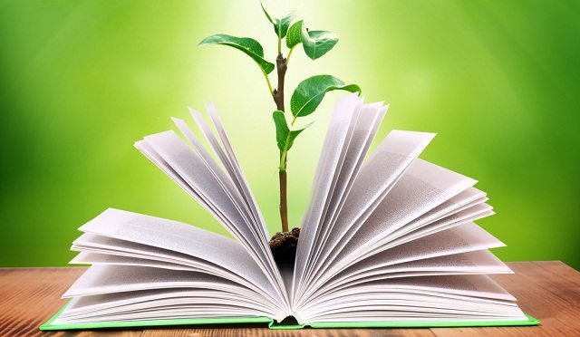

Educacion ambiental
La Huella Ecológica es la medida del impacto de las actividades humanas sobre la naturaleza, representada por la superficie necesaria para producir los recursos y aboserber los impactos de dicha actividad.
En el gráfico vemos como, con independencia del nivel de ingresos, los países están siguiendo a diferente ritmo, un patrón de desarrollo similar, caracterizado por la transición de las economías agrarias (basadas en la biomasa) a las industrializadas (basadas en los combustibles fósiles).
LA HUELLA ECOLÓGICA POR PAÍSES
Según el estudio, los países con más Huella Ecológica total son China, EEUU e India, mientras que los que tienen una Huella Ecológica superior per capita son Luxemburgo, Australia y EEUU.
España ocupa el puesto 22 del ranking mundial de la Huella Ecológica.
Desde 2007, la Huella Ecológica nacional ha disminuido. Los expertos señalan como principal causa la crisis económica, que ha generado un descenso de todos los componentes de la Huella, especialmente la de carbono y cultivos. Aun así nuestro país sigue consumiendo más recursos de los que puede producir. De hecho, España necesitaría casi 3 países como el nuestro para satisfacer sus demandas.
La huella hídrica es un indicador que define el volumen total de agua dulce usado para producir los bienes y servicios producidos por una empresa, o consumidos por un individuo o comunidad.
El total de la huella hídrica de un individuo o un producto descompone en tres elementos:
Azul: Es el volumen de agua dulce extraída de un cuerpo de agua superficial o subterránea y que es evaporada en el proceso productivo o incorporada en un producto.
Verde: Es el volumen de agua de precipitación que es evaporada en el proceso productivo o incorporada en un producto.
Gris: Es el volumen de agua contaminada, que puede ser cuantificada como el volumen de agua requerida para diluir los contaminantes hasta el punto en que la calidad del agua esté sobre los estándares aceptables.
¿Cuáles son las utilidades?
Cuantificar la magnitud de la cantidad de agua utilizada y los riesgos potenciales a los que se enfrenta un sistema productivo.
Para generar conciencia de dónde y cómo se utiliza el recurso hídrico.
Para tomar mejores decisiones sobre cómo manejar el recurso hídrico y gestionar procesos.
Participación en políticas locales y nacionales de sostenibilidad ambiental y productiva.
¿Cuál es su importancia en la agricultura?
A nivel mundial, la actividad agrícola usa alrededor del 70% de toda el agua consumida en el planeta y se calcula que en los próximos años, debido al aumento poblacional y los patrones de consumo, la cantidad de agua necesaria para producir los alimentos, fibras y biocombustibles requeridos por la población incrementen el uso del agua aumente hasta en un 55%. El indicador de huella hídrica en la agricultura puede permitir establecer políticas y acciones concretas para ahorrar agua en el sector que mayor requerimiento del recurso tiene.
¿Cómo se logra cuantificar la Huella Hídrica en los sistemas agrícolas evaluados?
El objetivo principal es desarrollar e implementar metodologías para la medición del uso del recurso en los tres componentes de la Huella Hídrica y adaptar estas metodologías a cada sistema productivo.
Para cuantificar la Huella Hídrica azul se hace necesario instalar aforadores o contadores de caudal que permitan cuantificar el agua proveniente de una fuente superficial o subterránea.
Para cuantificar la Huella Hídrica verde se hace necesario contar con información climática diaria que permita hacer seguimiento a los niveles de precipitación, una vez se cuenta con el valor de agua lluvia y mediante el uso de lisímetros se puede cuantificar el total del agua evapotranspiración.
Para cuantificar la Huella Hídrica gris se hacen monitores continuos a la calidad del agua que ingresa y sale del sistema evaluado los principales contaminantes productos de la fertilización.
Finalmente se hace un seguimiento a la producción en cada ciclo productivo y hace poder asociar cual es el gasto de agua por cada kilo o tonelada de producto producido.
¿Qué estrategias se han desarrollado según los diferentes cultivos (maíz, arroz y papa) para disminuir la huella?
En Arroz, se evalúa la eficiencia en el uso del agua en un sistema de producción tradicional comparando con un sistema de producción bajo el programa AMTEC (Adopción masiva de tecnologías) de FEDEARROZ. Este se basa en promover un manejo agronómico adecuado para cada sitio-especifico a partir de un diagnóstico y planificación de la producción. En términos del recurso hídrico, busca reducir el uso y contaminación del agua mediante una adecuada preparación del suelo y la cuantificación y control de los caudales de riego durante todo el ciclo del cultivo.
En papa, de la mano con FUNDESOT en Cundinamarca, se evalúan sistemas de producción convencional de papa y esquemas de agricultura de conservación que se fundamenta en tres principios básicos, mínima labranza o preparación del suelo, mantener el suelo con cobertura permanente, rotación de los cultivos con abonos verdes y uso racional de insumos. En Nariño, junto con BIOFUTURO, se realiza la evaluación comparativa de la producción de papa bajo tres esquemas, preparación del terreno con tractores y en el sentido de la pendiente, la práctica ancestral del guachado, y el guachado diagonal a la pendiente y con fertilización orgánica. En los dos departamentos se cuantifica la pérdida de calidad y fertilidad de los suelos, el agua de escorrentía y la perdida de nutrientes en ella y la productividad.
En maíz, Junto a FENALCE se está haciendo una evaluación bajo diferentes realidades productivas como herramienta para determinar la sostenibilidad productiva y ambiental de la producción del país en cinco zonas maiceras de Colombia. Este diagnóstico, este permitiendo ajustar prácticas e identificar puntos clave en el manejo del agua por parte del gremio y así disminuir la huella hídrica de la producción del cereal a nivel nacional.
